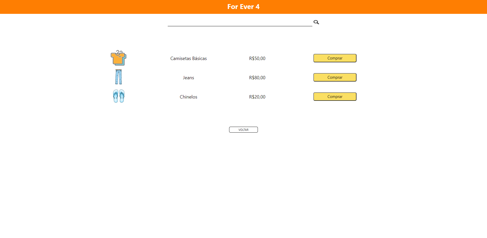
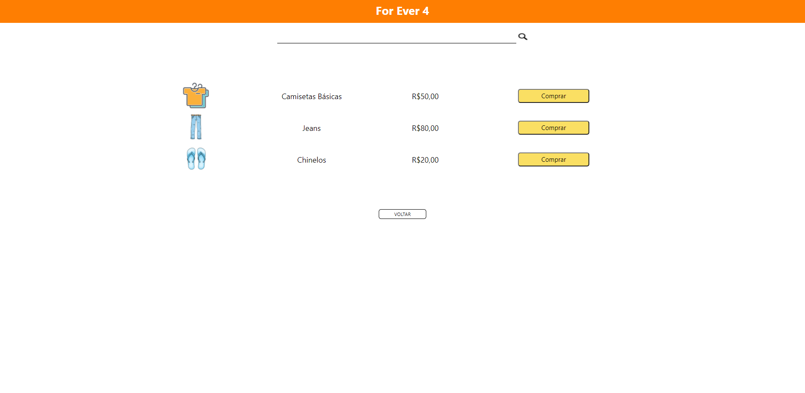

Atividade Debug
Esta foi uma atividade do curso da Labenu na qual recebi um site cheio de problemas de
layout que precisavam ser arrumados.
Para resolver os problemas e ajustar a página, só poderia ser
utilizado o Html e CSS. Mais uma vez, foi extremamente importante para fixar o aprendizado e pegar prática.
A atividade não foi nada fácil, mas acabei me divertindo bastante ao seguindo cada etapa e corrigindo
os "bugs".
 

Tecnologias utilizadas:
- Html
- CSS